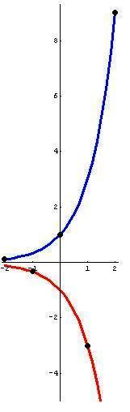

Marika, a 10th grader, graphed 3x, -(3x), and (-3)x
Marika plotted these graphs (among others, like 3(x+2) to see how 3x changes), on 1/4" graph paper. The graphs below, were done in Mathematica' by Don.
The blue graph 3x and the red graph -(3x) were done with the following commands:
Plot[{3^x,-3^x},{x,-2,2},PlotRange->{-5,9.3},AspectRatio ->True,PlotStyle->{{Thickness[.022],RGBColor[0,0,1]},{Thickness[.022],RGBColor[1,0,0]}}];
The points ' were plotted with these commands:
ListPlot[{{-2,1/9},{-1,-1/3},{0,1},{1,-3},{2,9}},PlotRange->{-5,9.3},AspectRatio ->True,PlotStyle'PointSize[0.05]]
Don overlapped the two plots in his paint program.

Notice that the points ' for (-3)x were plotted with integral x-coordinates, and alternate at points on the blue graph and the red graph. Marika's (and Jay's-a 6th grader) first reaction was to draw a curve connecting these points.